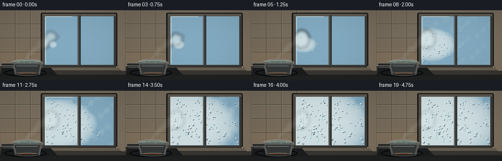
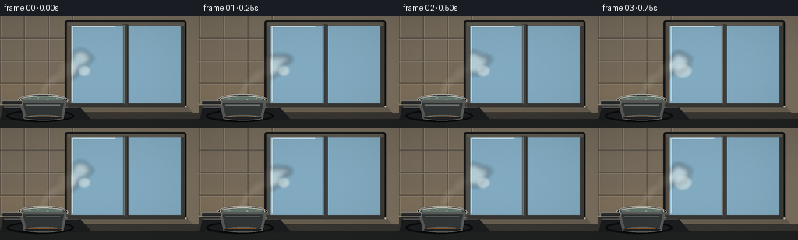
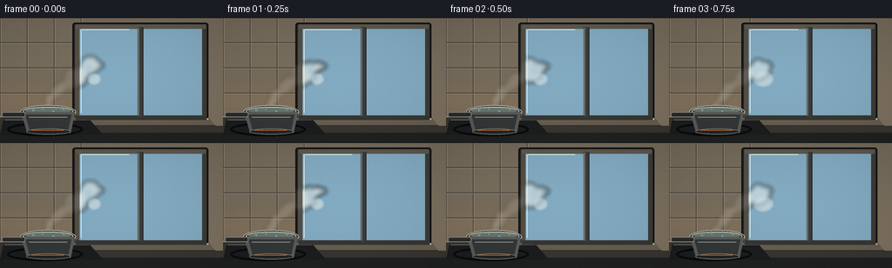

CODING AGENTS AS PIXEL WORLD MODELS
traex/GPT-5.6-Sol · phygen_112
点击播放 · 原生 RGB 像素
逐轮保存的候选
回放视频、检查图与代码变化。
每份候选均可单独播放。实际图片检查记录在下方工具轨迹中。
候选 01播放与检查图
点击播放 · 原生 RGB 像素


展开代码变化
--- 上一保存版本
+++ 本次保存版本
@@ -0,0 +1,246 @@
+from pathlib import Path
+import math
+import numpy as np
+from PIL import Image, ImageDraw, ImageFilter
+import artifact_io
+
+W,H,N = 256,144,20
+S=3
+rng=np.random.default_rng(112)
+
+def sc(v): return int(round(v*S))
+def box(b): return tuple(sc(v) for v in b)
+
+def smoothstep(x):
+ x=np.clip(x,0,1)
+ return x*x*(3-2*x)
+
+def add_poly(draw, pts, fill, width=1):
+ draw.line([(sc(x),sc(y)) for x,y in pts], fill=fill, width=max(1,sc(width)), joint='curve')
+
+def base_scene():
+ # softly textured warm kitchen wall
+ yy,xx=np.mgrid[0:H*S,0:W*S]
+ wall=np.empty((H*S,W*S,3),dtype=np.float32)
+ grad=(yy/(H*S))*11 + (xx/(W*S))*2
+ wall[:,:,0]=116+grad; wall[:,:,1]=106+grad*.77; wall[:,:,2]=91+grad*.55
+ noise=rng.normal(0,1.3,(H*S,W*S,1))
+ wall=np.clip(wall+noise,0,255).astype(np.uint8)
+ im=Image.fromarray(wall,'RGB')
+ d=ImageDraw.Draw(im)
+ # backsplash tiles, warm and understated
+ for x in [0,31,62,93]:
+ d.line([(sc(x),0),(sc(x),sc(112))], fill=(75,70,63), width=sc(1))
+ d.line([(sc(x+1),0),(sc(x+1),sc(112))], fill=(145,135,117), width=sc(.5))
+ for y in [28,57,86,112]:
+ d.line([(0,sc(y)),(sc(94),sc(y))], fill=(73,69,63), width=sc(1))
+ d.line([(0,sc(y+1)),(sc(94),sc(y+1))], fill=(143,133,115), width=sc(.5))
+ # under-cabinet warm glow on wall
+ glow=Image.new('RGBA',im.size,(0,0,0,0)); gd=ImageDraw.Draw(glow)
+ gd.rectangle(box((0,78,98,112)), fill=(245,174,78,25))
+ glow=glow.filter(ImageFilter.GaussianBlur(sc(14)))
+ im=Image.alpha_composite(im.convert('RGBA'),glow)
+ d=ImageDraw.Draw(im)
+ # Window surround and deep reveal shadow
+ d.rounded_rectangle(box((83,5,239,119)),radius=sc(3),fill=(39,38,37,255),outline=(19,20,21,255),width=sc(2))
+ d.rectangle(box((87,9,235,115)),fill=(111,111,104,255))
+ d.line([box((87,9))[:2],box((235,9))[:2]], fill=(173,165,147,255), width=sc(2))
+ d.line([box((87,10))[:2],box((87,115))[:2]], fill=(160,153,139,255), width=sc(2))
+ # exterior/glass: cold predawn scene
+ outside=np.zeros((sc(102),sc(142),4),dtype=np.uint8)
+ oy,ox=np.mgrid[0:outside.shape[0],0:outside.shape[1]]
+ v=oy/max(1,outside.shape[0]-1)
+ outside[:,:,0]=(31+20*v).astype(np.uint8)
+ outside[:,:,1]=(48+24*v).astype(np.uint8)
+ outside[:,:,2]=(66+28*v).astype(np.uint8)
+ outside[:,:,3]=255
+ out=Image.fromarray(outside,'RGBA')
+ od=ImageDraw.Draw(out)
+ # distant skyline and snowy roofs
+ for bx,bw,bh,col in [(4,20,37,(22,34,45,255)),(27,17,54,(25,38,51,255)),(47,27,42,(22,35,47,255)),(78,18,61,(26,38,52,255)),(100,30,46,(20,34,45,255)),(132,12,57,(24,37,50,255))]:
+ od.rectangle((sc(bx),sc(102-bh),sc(bx+bw),sc(102)),fill=col)
+ for wx in np.arange(bx+4,bx+bw-2,7):
+ for wy in np.arange(108-bh,96,10):
+ if rng.random()<.33:
+ od.rectangle((sc(wx),sc(wy),sc(wx+1.5),sc(wy+2)),fill=(222,178,94,175))
+ od.polygon([(0,sc(88)),(sc(23),sc(76)),(sc(49),sc(89)),(sc(73),sc(80)),(sc(103),sc(91)),(sc(142),sc(77)),(sc(142),sc(102)),(0,sc(102))],fill=(119,137,148,255))
+ od.line([(0,sc(88)),(sc(23),sc(76)),(sc(49),sc(89)),(sc(73),sc(80)),(sc(103),sc(91)),(sc(142),sc(77))],fill=(201,210,211,190),width=sc(2))
+ # blurry city bokeh
+ lights=Image.new('RGBA',out.size,(0,0,0,0)); ld=ImageDraw.Draw(lights)
+ for i in range(15):
+ lx=rng.uniform(3,139); ly=rng.uniform(18,78); r=rng.uniform(.7,1.8)
+ ld.ellipse((sc(lx-r),sc(ly-r),sc(lx+r),sc(ly+r)),fill=(255,197,101,int(rng.integers(90,210))))
+ lights=lights.filter(ImageFilter.GaussianBlur(sc(1.5)))
+ out=Image.alpha_composite(out,lights)
+ im.alpha_composite(out,(sc(90),sc(11)))
+ d=ImageDraw.Draw(im)
+ # glass blue reflection before condensation
+ d.rectangle(box((90,11,232,113)),fill=(130,170,192,18))
+ d.line([box((93,13))[:2],box((93,109))[:2]],fill=(216,238,243,70),width=sc(1))
+ d.line([box((94,13))[:2],box((148,13))[:2]],fill=(222,239,241,55),width=sc(1))
+ # frame and mullion
+ d.rectangle(box((86,7,91,116)),fill=(83,78,69,255))
+ d.rectangle(box((232,7,237,117)),fill=(61,59,55,255))
+ d.rectangle(box((87,7,236,12)),fill=(93,88,78,255))
+ d.rectangle(box((87,112,236,117)),fill=(55,54,51,255))
+ d.rectangle(box((158,10,164,114)),fill=(59,61,60,255))
+ d.line([box((159,11))[:2],box((159,112))[:2]],fill=(137,137,127,255),width=sc(1))
+ d.line([box((164,11))[:2],box((164,112))[:2]],fill=(28,31,32,255),width=sc(1))
+ # sill, strong perspective/bevel
+ d.polygon([box((80,115))[:2],box((240,115))[:2],box((247,124))[:2],box((75,124))[:2]],fill=(102,94,80,255))
+ d.line([box((80,116))[:2],box((239,116))[:2]],fill=(193,178,148,255),width=sc(2))
+ d.line([box((75,124))[:2],box((247,124))[:2]],fill=(43,42,39,255),width=sc(2))
+ # countertop
+ d.polygon([box((0,113))[:2],box((81,113))[:2],box((76,124))[:2],box((256,124))[:2],box((256,144))[:2],box((0,144))[:2]],fill=(57,54,50,255))
+ d.line([box((0,113))[:2],box((79,113))[:2]],fill=(151,137,110,255),width=sc(2))
+ d.rectangle(box((0,132,256,144)),fill=(32,33,33,255))
+ # stove top and controls
+ d.polygon([box((4,116))[:2],box((102,116))[:2],box((118,134))[:2],box((0,134))[:2]],fill=(27,29,30,255))
+ d.line([box((5,117))[:2],box((102,117))[:2]],fill=(113,116,113,255),width=sc(1))
+ d.ellipse(box((8,120,95,136)),outline=(10,11,12,255),width=sc(3))
+ return im
+
+BASE=base_scene()
+
+# deterministic condensation droplets: birth and position radiating from steam impact
+DROPS=[]
+for i in range(118):
+ # glass regions across both panes; density centered near x123,y67
+ x=float(rng.uniform(94,229)); y=float(rng.uniform(17,108))
+ dist=math.sqrt(((x-112)/125)**2+((y-70)/85)**2)
+ birth=np.clip(.06 + .58*dist + rng.normal(0,.095),.04,.87)
+ maxr=float(rng.uniform(.45,1.6)*(1.25 if y>65 else 1.0))
+ DROPS.append((x,y,float(birth),maxr,float(rng.uniform(0,6.28))))
+# large drops that coalesce and run late
+RUNS=[(106,53,.46,13),(122,77,.57,20),(145,42,.63,17),(181,66,.69,16),(211,87,.75,12),(137,94,.78,10)]
+
+def condensation_layer(k):
+ p=k/(N-1)
+ q=smoothstep((p-.06)/.90)
+ layer=Image.new('RGBA',(W*S,H*S),(0,0,0,0))
+ # cloudy micro-condensation using smooth noisy elliptical growth field
+ yy,xx=np.mgrid[0:H*S,0:W*S]; X=xx/S; Y=yy/S
+ rx=8+128*q; ry=7+74*q
+ dist=np.sqrt(((X-108)/rx)**2+((Y-70)/ry)**2)
+ field=smoothstep((1.10-dist)/.58)
+ # fine mottling generated deterministically and spatially coherent
+ n=(np.sin(X*.29+1.3)*np.sin(Y*.21-0.4)+np.sin(X*.11+Y*.17+2.1))*.5
+ alpha=np.clip((field*(32+118*q)+n*8*q),0,153)
+ valid=(X>=90)&(X<=232)&(Y>=11)&(Y<=113)
+ alpha=(alpha*valid).astype(np.uint8)
+ fog=np.zeros((H*S,W*S,4),dtype=np.uint8)
+ fog[:,:,:3]=np.array([211,225,227],dtype=np.uint8)
+ fog[:,:,3]=alpha
+ fogim=Image.fromarray(fog,'RGBA').filter(ImageFilter.GaussianBlur(sc(.75)))
+ layer=Image.alpha_composite(layer,fogim)
+ d=ImageDraw.Draw(layer)
+ # bead droplets, emerging outward over the timelapse
+ for x,y,b,rmax,phase in DROPS:
+ if q<=b: continue
+ age=smoothstep((q-b)/max(.06,1-b))
+ r=rmax*(.38+.72*age)
+ # very subtle gravity drift for mature beads
+ yy2=y + max(0,age-.74)*3.0
+ # dark lower-right refraction and bright upper-left glint
+ d.ellipse(box((x-r+.45,yy2-r+.55,x+r+.65,yy2+r+.75)),fill=(48,65,72,int(42+72*age)))
+ d.ellipse(box((x-r,yy2-r,x+r,yy2+r)),fill=(202,226,232,int(35+65*age)),outline=(228,244,246,int(80+115*age)),width=max(1,sc(.32)))
+ hr=max(.22,r*.27)
+ d.ellipse(box((x-r*.42-hr,yy2-r*.42-hr,x-r*.42+hr,yy2-r*.42+hr)),fill=(255,255,250,int(110+120*age)))
+ # coalesced drops and downward rivulets appear late, clearly signifying condensation
+ for x,y,b,length in RUNS:
+ if q<=b: continue
+ age=smoothstep((q-b)/(1-b))
+ travel=length*age
+ # wet track left behind
+ d.line([(sc(x),sc(y)),(sc(x+.35*math.sin(age*5)),sc(y+travel))],fill=(216,235,238,int(45+80*age)),width=sc(1.2))
+ d.line([(sc(x+1.0),sc(y+2)),(sc(x+.8),sc(y+travel))],fill=(40,62,70,int(28+48*age)),width=max(1,sc(.4)))
+ rr=1.15+1.15*age
+ cy=y+travel
+ d.ellipse(box((x-rr,cy-rr*1.35,x+rr,cy+rr*1.35)),fill=(173,209,217,int(95+95*age)),outline=(239,249,247,int(140+90*age)),width=max(1,sc(.35)))
+ d.ellipse(box((x-.55,cy-rr*.72,x+.05,cy-rr*.12)),fill=(255,255,255,215))
+ # crop physically to exposed glass; frame is also redrawn later
+ clip=Image.new('L',layer.size,0); cd=ImageDraw.Draw(clip)
+ cd.rectangle(box((90,11,232,113)),fill=255)
+ layer.putalpha(Image.composite(layer.getchannel('A'),Image.new('L',layer.size,0),clip))
+ return layer
+
+def redraw_front_frame(im):
+ d=ImageDraw.Draw(im)
+ # mullion and all rails stay dry/opaque above fog
+ d.rectangle(box((86,7,91,116)),fill=(83,78,69,255))
+ d.rectangle(box((232,7,237,117)),fill=(61,59,55,255))
+ d.rectangle(box((87,7,236,12)),fill=(93,88,78,255))
+ d.rectangle(box((87,112,236,117)),fill=(55,54,51,255))
+ d.rectangle(box((158,10,164,114)),fill=(59,61,60,255))
+ d.line([box((159,11))[:2],box((159,112))[:2]],fill=(137,137,127,255),width=sc(1))
+ d.line([box((164,11))[:2],box((164,112))[:2]],fill=(28,31,32,255),width=sc(1))
+ return im
+
+def pot_and_steam(im,k):
+ t=k/(N-1)
+ # steam behind pot, sweeping toward and visibly touching cold window
+ steam=Image.new('RGBA',im.size,(0,0,0,0))
+ # broad blurred vapor volumes
+ sd=ImageDraw.Draw(steam)
+ for j in range(7):
+ phase=1.8*j + t*5.5
+ pts=[]
+ for a in np.linspace(0,1,28):
+ # Starts at pot; convection rises then a cool draft curls it right into pane around (104,59)
+ x=54 + 54*(a**1.55) + (4.5+5*a)*math.sin(phase+a*7.0)*(a**.8)
+ y=104 - 50*a + 3.0*math.sin(phase*.8+a*9+j)*(a**.55)
+ pts.append((x,y))
+ alpha=int(19+9*math.sin(phase)**2)
+ add_poly(sd,pts,(238,239,229,alpha),width=2.4+j%3*.8)
+ # vapor plumes and impact bloom
+ for j in range(10):
+ a=((t*1.8+j/10+.07*math.sin(j*2.2))%1.0)
+ x=52+54*a**1.4+math.sin(j*4.2+t*8)*5*a
+ y=103-49*a+math.cos(j*3.1+t*6)*2.5
+ rx=3+8*a; ry=5+5*a
+ sd.ellipse(box((x-rx,y-ry,x+rx,y+ry)),fill=(245,244,232,int(13+23*(1-a))))
+ # cold-glass contact puff is timed from frame 1 onward
+ cp=smoothstep((t-.03)/.28)
+ sd.ellipse(box((98-10*cp,52-11*cp,104+15*cp,67+11*cp)),fill=(228,239,238,int(12+24*cp)))
+ steam=steam.filter(ImageFilter.GaussianBlur(sc(3.3)))
+ im=Image.alpha_composite(im,steam)
+ d=ImageDraw.Draw(im)
+ # saucepan body and rolled rim: crisp foreground anchors the scene
+ d.ellipse(box((23,100,87,116)),fill=(23,25,26,255),outline=(184,185,177,255),width=sc(1))
+ d.ellipse(box((26,102,84,112)),fill=(67,72,71,255),outline=(224,220,202,255),width=sc(1))
+ d.ellipse(box((29,103,81,110)),fill=(102,119,111,255))
+ # simmer bubbles
+ for bx,by,br in [(38,106,1.2),(49,104.8,.8),(61,107,1.1),(73,105.2,.7)]:
+ d.ellipse(box((bx-br,by-br*.45,bx+br,by+br*.45)),outline=(210,224,210,190),width=max(1,sc(.35)))
+ d.polygon([box((24,108))[:2],box((86,108))[:2],box((81,132))[:2],box((31,132))[:2]],fill=(89,91,88,255))
+ d.polygon([box((29,111))[:2],box((82,111))[:2],box((78,129))[:2],box((34,129))[:2]],fill=(52,55,55,255))
+ d.line([box((33,114))[:2],box((77,114))[:2]],fill=(143,147,142,255),width=sc(1))
+ d.ellipse(box((30,127,81,134)),fill=(35,37,37,255),outline=(115,116,111,255),width=sc(1))
+ # left handle
+ d.rounded_rectangle(box((2,108,29,114)),radius=sc(2),fill=(42,43,42,255),outline=(136,134,124,255),width=sc(1))
+ # small warm gas reflection on steel
+ d.line([box((36,129))[:2],box((73,129))[:2]],fill=(177,103,48,120),width=sc(1))
+ return im
+
+def make_frame(k):
+ im=BASE.copy()
+ # condensation belongs on glass and accumulates monotonically
+ im=Image.alpha_composite(im,condensation_layer(k))
+ im=redraw_front_frame(im)
+ im=pot_and_steam(im,k)
+ # cool window reflection / warm kitchen grading and gentle vignette
+ arr=np.array(im.convert('RGB').resize((W,H),Image.Resampling.LANCZOS)).astype(np.float32)
+ yy,xx=np.mgrid[0:H,0:W]
+ vig=1-.12*np.clip(((xx-W/2)/(W*.72))**2+((yy-H/2)/(H*.78))**2,0,1)
+ arr*=vig[:,:,None]
+ # fine film texture to keep surfaces natural
+ local=np.random.default_rng(900+k).normal(0,.55,(H,W,1))
+ arr=np.clip(arr+local,0,255).astype(np.uint8)
+ return arr
+
+def main():
+ frames=np.stack([make_frame(k) for k in range(N)],axis=0)
+ artifact_io.save(frames,Path(__file__).resolve().parent)
+
+if __name__=='__main__':
+ main()
候选 02播放与检查图
点击播放 · 原生 RGB 像素

展开代码变化
--- 上一保存版本
+++ 本次保存版本
@@ -190,19 +190,19 @@
x=54 + 54*(a**1.55) + (4.5+5*a)*math.sin(phase+a*7.0)*(a**.8)
y=104 - 50*a + 3.0*math.sin(phase*.8+a*9+j)*(a**.55)
pts.append((x,y))
- alpha=int(19+9*math.sin(phase)**2)
- add_poly(sd,pts,(238,239,229,alpha),width=2.4+j%3*.8)
+ alpha=int(31+14*math.sin(phase)**2)
+ add_poly(sd,pts,(238,239,229,alpha),width=3.2+j%3*1.0)
# vapor plumes and impact bloom
for j in range(10):
a=((t*1.8+j/10+.07*math.sin(j*2.2))%1.0)
x=52+54*a**1.4+math.sin(j*4.2+t*8)*5*a
y=103-49*a+math.cos(j*3.1+t*6)*2.5
rx=3+8*a; ry=5+5*a
- sd.ellipse(box((x-rx,y-ry,x+rx,y+ry)),fill=(245,244,232,int(13+23*(1-a))))
+ sd.ellipse(box((x-rx,y-ry,x+rx,y+ry)),fill=(245,244,232,int(19+34*(1-a))))
# cold-glass contact puff is timed from frame 1 onward
cp=smoothstep((t-.03)/.28)
sd.ellipse(box((98-10*cp,52-11*cp,104+15*cp,67+11*cp)),fill=(228,239,238,int(12+24*cp)))
- steam=steam.filter(ImageFilter.GaussianBlur(sc(3.3)))
+ steam=steam.filter(ImageFilter.GaussianBlur(sc(2.7)))
im=Image.alpha_composite(im,steam)
d=ImageDraw.Draw(im)
# saucepan body and rolled rim: crisp foreground anchors the scene
可观测工具轨迹
实际执行的命令与返回图片。
命令 1exit 0
/bin/bash -lc "cat prompt.txt && printf '\\n---RULES---\\n' && cat GENERATION_RULES.md && printf '\\n---SPEC---\\n' && cat task_spec.json"
命令 2exit 0
/bin/bash -lc "find . -maxdepth 2 -type f -printf '%p %s bytes\\n' | sort"
命令 3exit 0
/bin/bash -lc "sed -n '1,240p' artifact_io.py"
命令 4exit 0
/bin/bash -lc "cat > generate.py <<'PY'
from pathlib import Path
import math
import numpy as np
from PIL import Image, ImageDraw, ImageFilter
import artifact_io
W,H,N = 256,144,20
S=3
rng=np.random.default_rng(112)
def sc(v): return int(round(v*S))
def box(b): return tuple(sc(v) for v in b)
def smoothstep(x):
x=np.clip(x,0,1)
return x*x*(3-2*x)
def add_poly(draw, pts, fill, width=1):
draw.line([(sc(x),sc(y)) for x,y in pts], fill=fill, width=max(1,sc(width)), joint='curve')
def base_scene():
# softly textured warm kitchen wall
yy,xx=np.mgrid[0:H*S,0:W*S]
wall=np.empty((H*S,W*S,3),dtype=np.float32)
grad=(yy/(H*S))*11 + (xx/(W*S))*2
wall[:,:,0]=116+grad; wall[:,:,1]=106+grad*.77; wall[:,:,2]=91+grad*.55
noise=rng.normal(0,1.3,(H*S,W*S,1))
wall=np.clip(wall+noise,0,255).astype(np.uint8)
im=Image.fromarray(wall,'RGB')
d=ImageDraw.Draw(im)
# backsplash tiles, warm and understated
for x in [0,31,62,93]:
d.line([(sc(x),0),(sc(x),sc(112))], fill=(75,70,63), width=sc(1))
d.line([(sc(x+1),0),(sc(x+1),sc(112))], fill=(145,135,117), width=sc(.5))
for y in [28,57,86,112]:
d.line([(0,sc(y)),(sc(94),sc(y))], fill=(73,69,63), width=sc(1))
d.line([(0,sc(y+1)),(sc(94),sc(y+1))], fill=(143,133,115), width=sc(.5))
# under-cabinet warm glow on wall
glow=Image.new('RGBA',im.size,(0,0,0,0)); gd=ImageDraw.Draw(glow)
gd.rectangle(box((0,78,98,112)), fill=(245,174,78,25))
glow=glow.filter(ImageFilter.GaussianBlur(sc(14)))
im=Image.alpha_composite(im.convert('RGBA'),glow)
d=ImageDraw.Draw(im)
# Window surround and deep reveal shadow
d.rounded_rectangle(box((83,5,239,119)),radius=sc(3),fill=(39,38,37,255),outline=(19,20,21,255),width=sc(2))
d.rectangle(box((87,9,235,115)),fill=(111,111,104,255))
d.line([box((87,9))[:2],box((235,9))[:2]], fill=(173,165,147,255), width=sc(2))
d.line([box((87,10))[:2],box((87,115))[:2]], fill=(160,153,139,255), width=sc(2))
# exterior/glass: cold predawn scene
outside=np.zeros((sc(102),sc(142),4),dtype=np.uint8)
oy,ox=np.mgrid[0:outside.shape[0],0:outside.shape[1]]
v=oy/max(1,outside.shape[0]-1)
outside[:,:,0]=(31+20*v).astype(np.uint8)
outside[:,:,1]=(48+24*v).astype(np.uint8)
outside[:,:,2]=(66+28*v).astype(np.uint8)
outside[:,:,3]=255
out=Image.fromarray(outside,'RGBA')
od=ImageDraw.Draw(out)
# distant skyline and snowy roofs
for bx,bw,bh,col in [(4,20,37,(22,34,45,255)),(27,17,54,(25,38,51,255)),(47,27,42,(22,35,47,255)),(78,18,61,(26,38,52,255)),(100,30,46,(20,34,45,255)),(132,12,57,(24,37,50,255))]:
od.rectangle((sc(bx),sc(102-bh),sc(bx+bw),sc(102)),fill=col)
for wx in np.arange(bx+4,bx+bw-2,7):
for wy in np.arange(108-bh,96,10):
if rng.random()<.33:
od.rectangle((sc(wx),sc(wy),sc(wx+1.5),sc(wy+2)),fill=(222,178,94,175))
od.polygon([(0,sc(88)),(sc(23),sc(76)),(sc(49),sc(89)),(sc(73),sc(80)),(sc(103),sc(91)),(sc(142),sc(77)),(sc(142),sc(102)),(0,sc(102))],fill=(119,137,148,255))
od.line([(0,sc(88)),(sc(23),sc(76)),(sc(49),sc(89)),(sc(73),sc(80)),(sc(103),sc(91)),(sc(142),sc(77))],fill=(201,210,211,190),width=sc(2))
# blurry city bokeh
lights=Image.new('RGBA',out.size,(0,0,0,0)); ld=ImageDraw.Draw(lights)
for i in range(15):
lx=rng.uniform(3,139); ly=rng.uniform(18,78); r=rng.uniform(.7,1.8)
ld.ellipse((sc(lx-r),sc(ly-r),sc(lx+r),sc(ly+r)),fill=(255,197,101,int(rng.integers(90,210))))
lights=lights.filter(ImageFilter.GaussianBlur(sc(1.5)))
out=Image.alpha_composite(out,lights)
im.alpha_composite(out,(sc(90),sc(11)))
d=ImageDraw.Draw(im)
# glass blue reflection before condensation
d.rectangle(box((90,11,232,113)),fill=(130,170,192,18))
d.line([box((93,13))[:2],box((93,109))[:2]],fill=(216,238,243,70),width=sc(1))
d.line([box((94,13))[:2],box((148,13))[:2]],fill=(222,239,241,55),width=sc(1))
# frame and mullion
d.rectangle(box((86,7,91,116)),fill=(83,78,69,255))
d.rectangle(box((232,7,237,117)),fill=(61,59,55,255))
d.rectangle(box((87,7,236,12)),fill=(93,88,78,255))
d.rectangle(box((87,112,236,117)),fill=(55,54,51,255))
d.rectangle(box((158,10,164,114)),fill=(59,61,60,255))
d.line([box((159,11))[:2],box((159,112))[:2]],fill=(137,137,127,255),width=sc(1))
d.line([box((164,11))[:2],box((164,112))[:2]],fill=(28,31,32,255),width=sc(1))
# sill, strong perspective/bevel
d.polygon([box((80,115))[:2],box((240,115))[:2],box((247,124))[:2],box((75,124))[:2]],fill=(102,94,80,255))
d.line([box((80,116))[:2],box((239,116))[:2]],fill=(193,178,148,255),width=sc(2))
d.line([box((75,124))[:2],box((247,124))[:2]],fill=(43,42,39,255),width=sc(2))
# countertop
d.polygon([box((0,113))[:2],box((81,113))[:2],box((76,124))[:2],box((256,124))[:2],box((256,144))[:2],box((0,144))[:2]],fill=(57,54,50,255))
d.line([box((0,113))[:2],box((79,113))[:2]],fill=(151,137,110,255),width=sc(2))
d.rectangle(box((0,132,256,144)),fill=(32,33,33,255))
# stove top and controls
d.polygon([box((4,116))[:2],box((102,116))[:2],box((118,134))[:2],box((0,134))[:2]],fill=(27,29,30,255))
d.line([box((5,117))[:2],box((102,117))[:2]],fill=(113,116,113,255),width=sc(1))
d.ellipse(box((8,120,95,136)),outline=(10,11,12,255),width=sc(3))
return im
BASE=base_scene()
# deterministic condensation droplets: birth and position radiating from steam impact
DROPS=[]
for i in range(118):
# glass regions across both panes; density centered near x123,y67
x=float(rng.uniform(94,229)); y=float(rng.uniform(17,108))
dist=math.sqrt(((x-112)/125)**2+((y-70)/85)**2)
birth=np.clip(.06 + .58*dist + rng.normal(0,.095),.04,.87)
maxr=float(rng.uniform(.45,1.6)*(1.25 if y>65 else 1.0))
DROPS.append((x,y,float(birth),maxr,float(rng.uniform(0,6.28))))
# large drops that coalesce and run late
RUNS=[(106,53,.46,13),(122,77,.57,20),(145,42,.63,17),(181,66,.69,16),(211,87,.75,12),(137,94,.78,10)]
def condensation_layer(k):
p=k/(N-1)
q=smoothstep((p-.06)/.90)
layer=Image.new('RGBA',(W*S,H*S),(0,0,0,0))
# cloudy micro-condensation using smooth noisy elliptical growth field
yy,xx=np.mgrid[0:H*S,0:W*S]; X=xx/S; Y=yy/S
rx=8+128*q; ry=7+74*q
dist=np.sqrt(((X-108)/rx)**2+((Y-70)/ry)**2)
field=smoothstep((1.10-dist)/.58)
# fine mottling generated deterministically and spatially coherent
n=(np.sin(X*.29+1.3)*np.sin(Y*.21-0.4)+np.sin(X*.11+Y*.17+2.1))*.5
alpha=np.clip((field*(32+118*q)+n*8*q),0,153)
valid=(X>=90)&(X<=232)&(Y>=11)&(Y<=113)
alpha=(alpha*valid).astype(np.uint8)
fog=np.zeros((H*S,W*S,4),dtype=np.uint8)
fog[:,:,:3]=np.array([211,225,227],dtype=np.uint8)
fog[:,:,3]=alpha
fogim=Image.fromarray(fog,'RGBA').filter(ImageFilter.GaussianBlur(sc(.75)))
layer=Image.alpha_composite(layer,fogim)
d=ImageDraw.Draw(layer)
# bead droplets, emerging outward over the timelapse
for x,y,b,rmax,phase in DROPS:
if q<=b: continue
age=smoothstep((q-b)/max(.06,1-b))
r=rmax*(.38+.72*age)
# very subtle gravity drift for mature beads
yy2=y + max(0,age-.74)*3.0
# dark lower-right refraction and bright upper-left glint
d.ellipse(box((x-r+.45,yy2-r+.55,x+r+.65,yy2+r+.75)),fill=(48,65,72,int(42+72*age)))
d.ellipse(box((x-r,yy2-r,x+r,yy2+r)),fill=(202,226,232,int(35+65*age)),outline=(228,244,246,int(80+115*age)),width=max(1,sc(.32)))
hr=max(.22,r*.27)
d.ellipse(box((x-r*.42-hr,yy2-r*.42-hr,x-r*.42+hr,yy2-r*.42+hr)),fill=(255,255,250,int(110+120*age)))
# coalesced drops and downward rivulets appear late, clearly signifying condensation
for x,y,b,length in RUNS:
if q<=b: continue
age=smoothstep((q-b)/(1-b))
travel=length*age
# wet track left behind
d.line([(sc(x),sc(y)),(sc(x+.35*math.sin(age*5)),sc(y+travel))],fill=(216,235,238,int(45+80*age)),width=sc(1.2))
d.line([(sc(x+1.0),sc(y+2)),(sc(x+.8),sc(y+travel))],fill=(40,62,70,int(28+48*age)),width=max(1,sc(.4)))
rr=1.15+1.15*age
cy=y+travel
d.ellipse(box((x-rr,cy-rr*1.35,x+rr,cy+rr*1.35)),fill=(173,209,217,int(95+95*age)),outline=(239,249,247,int(140+90*age)),width=max(1,sc(.35)))
d.ellipse(box((x-.55,cy-rr*.72,x+.05,cy-rr*.12)),fill=(255,255,255,215))
# crop physically to exposed glass; frame is also redrawn later
clip=Image.new('L',layer.size,0); cd=ImageDraw.Draw(clip)
cd.rectangle(box((90,11,232,113)),fill=255)
layer.putalpha(Image.composite(layer.getchannel('A'),Image.new('L',layer.size,0),clip))
return layer
def redraw_front_frame(im):
d=ImageDraw.Draw(im)
# mullion and all rails stay dry/opaque above fog
d.rectangle(box((86,7,91,116)),fill=(83,78,69,255))
d.rectangle(box((232,7,237,117)),fill=(61,59,55,255))
d.rectangle(box((87,7,236,12)),fill=(93,88,78,255))
d.rectangle(box((87,112,236,117)),fill=(55,54,51,255))
d.rectangle(box((158,10,164,114)),fill=(59,61,60,255))
d.line([box((159,11))[:2],box((159,112))[:2]],fill=(137,137,127,255),width=sc(1))
d.line([box((164,11))[:2],box((164,112))[:2]],fill=(28,31,32,255),width=sc(1))
return im
def pot_and_steam(im,k):
t=k/(N-1)
# steam behind pot, sweeping toward and visibly touching cold window
steam=Image.new('RGBA',im.size,(0,0,0,0))
# broad blurred vapor volumes
sd=ImageDraw.Draw(steam)
for j in range(7):
phase=1.8*j + t*5.5
pts=[]
for a in np.linspace(0,1,28):
# Starts at pot; convection rises then a cool draft curls it right into pane around (104,59)
x=54 + 54*(a**1.55) + (4.5+5*a)*math.sin(phase+a*7.0)*(a**.8)
y=104 - 50*a + 3.0*math.sin(phase*.8+a*9+j)*(a**.55)
pts.append((x,y))
alpha=int(19+9*math.sin(phase)**2)
add_poly(sd,pts,(238,239,229,alpha),width=2.4+j%3*.8)
# vapor plumes and impact bloom
for j in range(10):
a=((t*1.8+j/10+.07*math.sin(j*2.2))%1.0)
x=52+54*a**1.4+math.sin(j*4.2+t*8)*5*a
y=103-49*a+math.cos(j*3.1+t*6)*2.5
rx=3+8*a; ry=5+5*a
sd.ellipse(box((x-rx,y-ry,x+rx,y+ry)),fill=(245,244,232,int(13+23*(1-a))))
# cold-glass contact puff is timed from frame 1 onward
cp=smoothstep((t-.03)/.28)
sd.ellipse(box((98-10*cp,52-11*cp,104+15*cp,67+11*cp)),fill=(228,239,238,int(12+24*cp)))
steam=steam.filter(ImageFilter.GaussianBlur(sc(3.3)))
im=Image.alpha_composite(im,steam)
d=ImageDraw.Draw(im)
# saucepan body and rolled rim: crisp foreground anchors the scene
d.ellipse(box((23,100,87,116)),fill=(23,25,26,255),outline=(184,185,177,255),width=sc(1))
d.ellipse(box((26,102,84,112)),fill=(67,72,71,255),outline=(224,220,202,255),width=sc(1))
d.ellipse(box((29,103,81,110)),fill=(102,119,111,255))
# simmer bubbles
for bx,by,br in [(38,106,1.2),(49,104.8,.8),(61,107,1.1),(73,105.2,.7)]:
d.ellipse(box((bx-br,by-br*.45,bx+br,by+br*.45)),outline=(210,224,210,190),width=max(1,sc(.35)))
d.polygon([box((24,108))[:2],box((86,108))[:2],box((81,132))[:2],box((31,132))[:2]],fill=(89,91,88,255))
d.polygon([box((29,111))[:2],box((82,111))[:2],box((78,129))[:2],box((34,129))[:2]],fill=(52,55,55,255))
d.line([box((33,114))[:2],box((77,114))[:2]],fill=(143,147,142,255),width=sc(1))
d.ellipse(box((30,127,81,134)),fill=(35,37,37,255),outline=(115,116,111,255),width=sc(1))
# left handle
d.rounded_rectangle(box((2,108,29,114)),radius=sc(2),fill=(42,43,42,255),outline=(136,134,124,255),width=sc(1))
# small warm gas reflection on steel
d.line([box((36,129))[:2],box((73,129))[:2]],fill=(177,103,48,120),width=sc(1))
return im
def make_frame(k):
im=BASE.copy()
# condensation belongs on glass and accumulates monotonically
im=Image.alpha_composite(im,condensation_layer(k))
im=redraw_front_frame(im)
im=pot_and_steam(im,k)
# cool window reflection / warm kitchen grading and gentle vignette
arr=np.array(im.convert('RGB').resize((W,H),Image.Resampling.LANCZOS)).astype(np.float32)
yy,xx=np.mgrid[0:H,0:W]
vig=1-.12*np.clip(((xx-W/2)/(W*.72))**2+((yy-H/2)/(H*.78))**2,0,1)
arr*=vig[:,:,None]
# fine film texture to keep surfaces natural
local=np.random.default_rng(900+k).normal(0,.55,(H,W,1))
arr=np.clip(arr+local,0,255).astype(np.uint8)
return arr
def main():
frames=np.stack([make_frame(k) for k in range(N)],axis=0)
artifact_io.save(frames,Path(__file__).resolve().parent)
if __name__=='__main__':
main()
PY
python generate.py
ls -lh pixels.npz inspection.png index.html frames/00.png frames/19.png"命令 5exit 0
/bin/bash -lc "python generate.py && python - <<'PY'
import json, numpy as np
from pathlib import Path
s=json.loads(Path('task_spec.json').read_text())
z=np.load('pixels.npz')['pixels']
assert z.shape==(s['height'],s['width'],s['frames'])
assert Path('index.html').stat().st_size>1000
assert len(list(Path('frames').glob('*.png')))==s['frames']
print('verified',z.shape,z.dtype,Path('pixels.npz').stat().st_size)
PY"视觉工具实际返回图片 1

保存候选 2 份；完成命令 5 次；可验证图片返回 1 张。原始 API 响应与完整日志保留在本地。